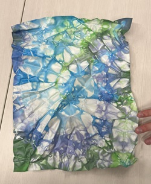
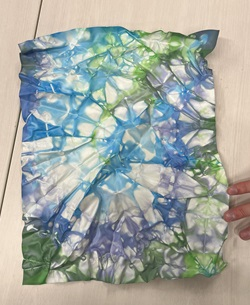
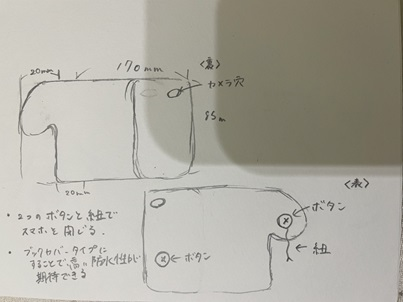
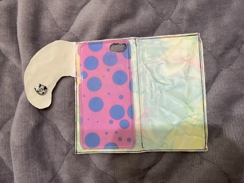
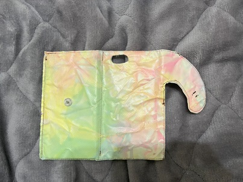
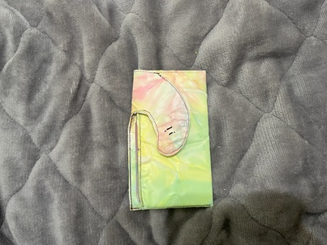

手帳型スマホケース
使用材料
ターポリン
染料
概要
ターポリンの防水性を利用し、防水性のあるスマホケース。
数色の染料を使用し、カラフルな絞り染めで染色
染色したターポリン
 

設計図

留め具をマチ付き封筒の様にすることで少しモダンなデザインに
＜メモ＞
ターポリンの裁断はハサミで行うことで綺麗に着ることが出来る。
布を当てながらアイロンをかけることでしわはある程度伸ばすことが出来る。しかし布が伸びて強度が下がる。
完成品



改善点
ミシンで縫い合わせる際、滑りにくく加工が難しかったため、内側の素材を滑りやすいものに変更又は、
害総統に使用することが良い素材だと感じた。